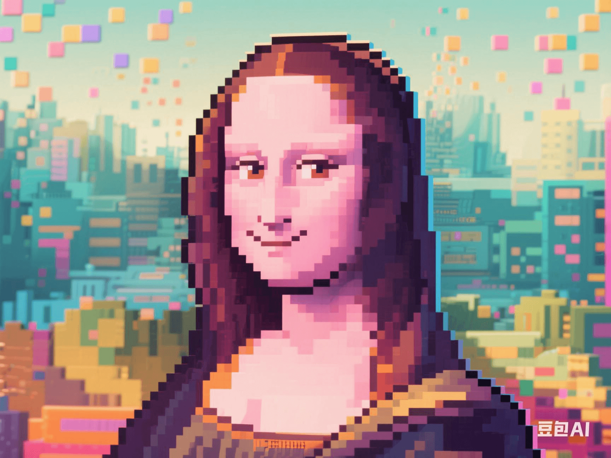

AI Copyright War: Who Owns the Mona Lisa Generated by Midjourney?
PeaceLove.Top Insights :2025-04-19
🧑🎨 AI and Art: The 'Gray Area' of Copyright
With the rapid development of artificial intelligence technology, AI has become a major force in the creative field. Recently, artworks generated by AI drawing tools such as Midjourney have sparked extensive discussions. Especially when they imitate classic artworks, the copyright issue becomes particularly complex. 🎨 For example, when an AI system generates a new version of the 'Mona Lisa' through a large amount of historical art data, does it infringe the copyright of the original work? Or does this 'Mona Lisa' created by AI belong to the company that developed the AI or the user? The answer to this question is affecting the nerves of multiple fields such as art, technology, and law. ⚖️
🧠 The Collision between AI Creation and Copyright
1. The Uniqueness of AI-Generated Art 🤖🎨
AI art-generating tools analyze a large number of historical artworks through deep-learning algorithms and generate original works that meet the user's needs. These works are not directly created by humans but are the result of machine calculation and optimization. However, although the generated artworks seem 'original', their creation process is based on existing artworks and data. This brings a core problem: Does AI-generated art have 'originality'? And the core of originality is the issue of copyright ownership. Who should own the copyright of the works created by AI? 👩⚖️
2. The Contradiction between Traditional Copyright Law and AI Creation ⚖️
According to traditional copyright law, copyright is usually granted to the creator, and the creator is a 'human'. But AI is not a 'human'. It does not have creative intention, consciousness, or personal emotion. Therefore, whether the works created by AI can have copyright has always been controversial. In most legal frameworks, copyright can only belong to a person or a legal entity, and AI, as a tool, seems unable to enjoy these rights. 🧑⚖️ But when AI-generated artworks start to be commercialized, sold, and even become high-priced auction items, the issue of copyright ownership becomes even more difficult. Can the company that developed the AI, the artist who used the AI, or even the AI itself be considered the creator? Should the legal framework behind this be adjusted? 💼
💡 Intellectual Property Disputes over AI-Generated Works
1. The 'Competition' between AI and Traditional Artists 👩🎨🤖
As AI tools are more widely used in art creation, many traditional artists are starting to feel anxious. After all, AI can generate complex artworks in a few seconds, and these works may be almost similar to or more innovative than those hand-created by traditional artists. Will such a phenomenon weaken the creative value of artists? Should artists worry that their creations will be 'replaced' by AI? In addition, should AI-generated artworks enjoy the same copyright protection as those of human artists? If an AI-generated work infringes the copyright of a traditional artist, who should be responsible? This is a difficult problem worthy of in-depth consideration. 🖌️⚡
2. The Remodeling of Intellectual Property in the AI Era 🔑
With the popularization of AI in the creative field, the intellectual property system is facing the pressure of re-examination. In many countries, intellectual property laws do not clearly stipulate how to deal with works created by non-humans. Should countries introduce new laws and regulations specifically for AI creation? Or should the existing copyright laws be revised to adapt to the new creative model? For example, if an AI creates an artwork similar to the 'Mona Lisa' and gains high praise and great commercial value in the art market, the issue of intellectual property ownership of this work will trigger a series of legal lawsuits. The company that developed the AI may claim to own the copyright, while the art creator or AI user may think that they should have the ownership of the work. 🔎
🤔 The Debate on Law and Ethics: Who Is the Creator?
The copyright issue of AI creation is not only a legal problem but also involves multiple aspects such as ethics, technology, and commercial interests. This problem needs to be explored from different perspectives:
1. The Issue of AI's 'Creative Intention' 🧠
Although AI can generate 'seemingly original' artworks, its creation process has no 'creative intention'. It is the result generated based on a large amount of data and algorithms, rather than out of the creative motivation of an artist or an individual. In this way, whether AI works can enjoy the same copyright rights as human creations has become an ethical issue. 🤖
2. The Rights and Interests of Developers and Users 💼🖼️
In AI creation, the rights of developers and users may also conflict. Should the company that developed the AI algorithm enjoy the copyright, or is the artist who finally uses these AI tools to create the owner of the copyright? This also involves the ethical issue of 'tool and creator': Is AI a creative tool, or is the designer of AI the 'behind-the-scenes creator'? 👩💻👨🎨
🌍 The Future of the Global AI Copyright Game
With the wide application of AI technology in art creation, the laws and policies of countries around the world will have to make corresponding adjustments and responses. How to balance technological progress and intellectual property protection and how to ensure innovation and fairness will be the key to future legal reforms. In the future, the copyright issue of AI creation may become the focus of intense debates among countries. And all this is not only related to the technology itself but also to humanity's fundamental understanding of creation, intellectual property, and 'creative intention'. 💡
🚀 Conclusion: New Copyright Challenges in the AI Era
With the continuous development and application of AI technology, the copyright issues in multiple fields such as art creation, literary works, and even scientific research will face re-definition. How should the status of AI as a 'creator' be defined? How will future law, ethics, and technology interact? All this will affect our understanding of the essence of 'creation' and 'copyright'. 📚⚖️